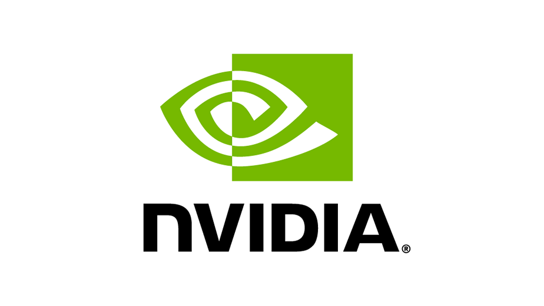

Graphics Cards
Graphics cards, also known as video cards or GPUs (Graphics Processing Units), play a vital role in enhancing your computer's visual performance. They are responsible for rendering images and videos on your screen, making them a crucial component for gaming, multimedia, and professional applications.
At PCopolis, we offer a wide range of graphics cards from two leading brands: NVIDIA and AMD. Each brand has its unique strengths and offerings.
NVIDIA Graphics CardsNVIDIA is renowned for its cutting-edge graphics technology and high-performance GPUs. NVIDIA graphics cards are a top choice for gamers and professionals who demand exceptional graphics quality and rendering speed. Whether you're into gaming, 3D modeling, or AI development, NVIDIA offers a variety of options to meet your needs. Explore NVIDIA Graphics Cards |
AMD Graphics CardsAMD, another major player in the graphics card market, provides powerful and cost-effective solutions. AMD graphics cards are known for their competitive pricing and strong performance. They are an excellent choice for budget-conscious gamers and users seeking solid graphics performance for a variety of tasks. Explore AMD Graphics Cards |